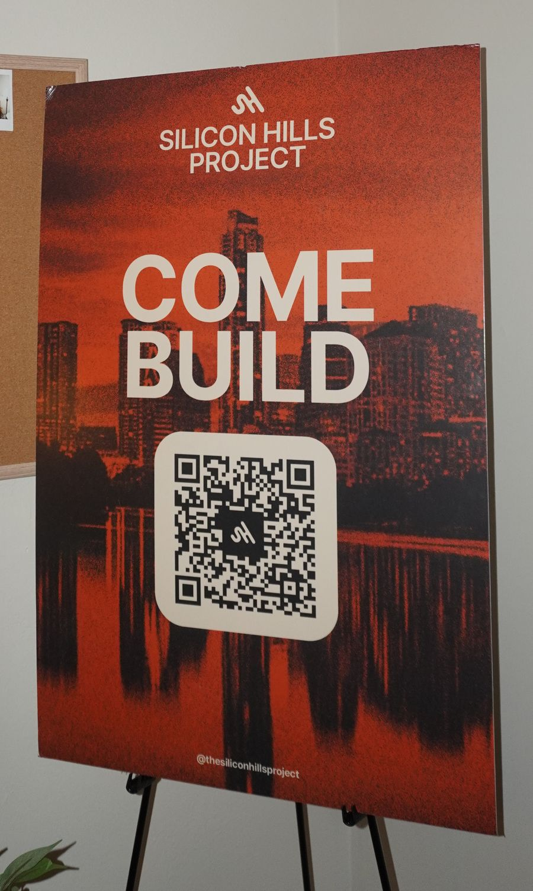
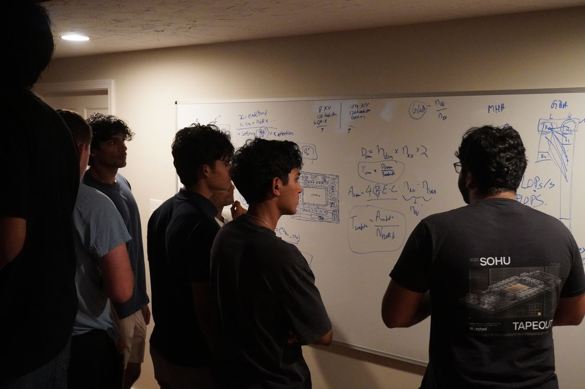
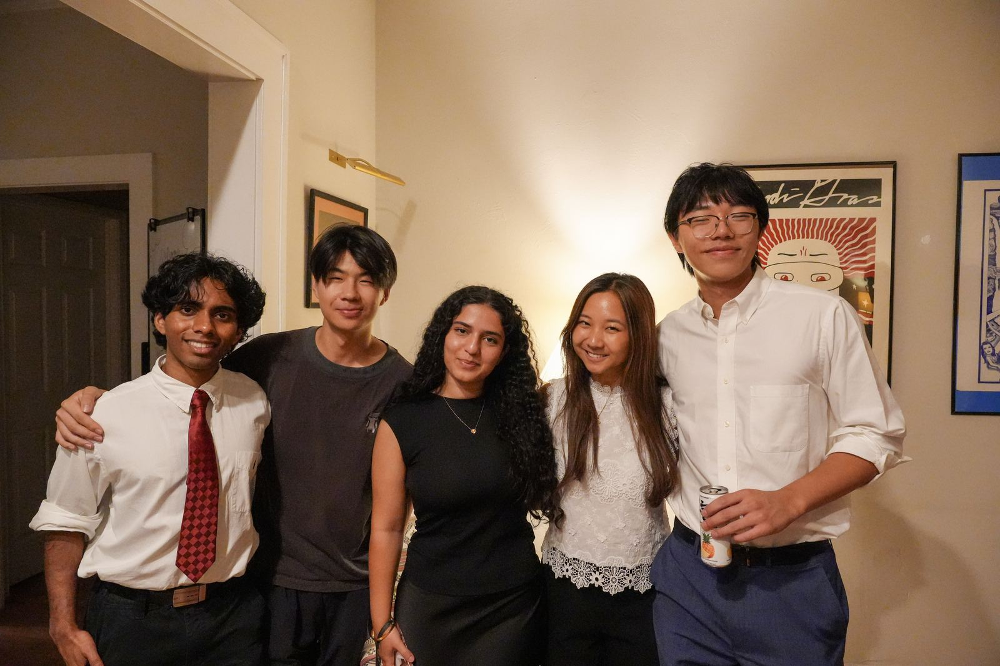

Silicon Hills Project
Add a sentence or two on what the Silicon Hills Project is and your role in it.
See photos ↓@UT Austin
write a few lines about what you're into here: what you study, what you're building, and what you do for fun. you'll see me document my work and thoughts here.
add a highlight here,
like an award or a role
Add a sentence or two on what the Silicon Hills Project is and your role in it.
See photos ↓


The best way to reach me is by email, or find me on the links below.
anikali@utexas.edu